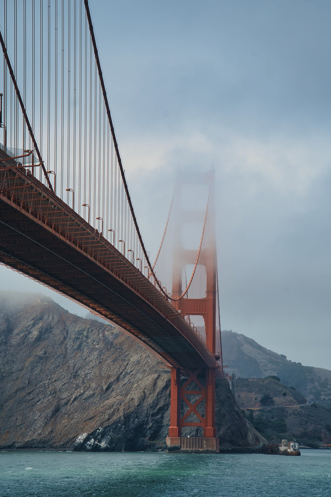
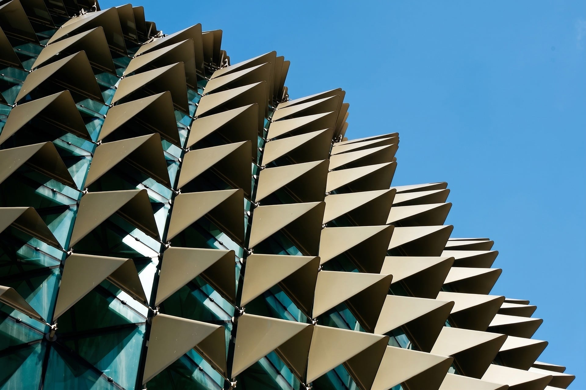
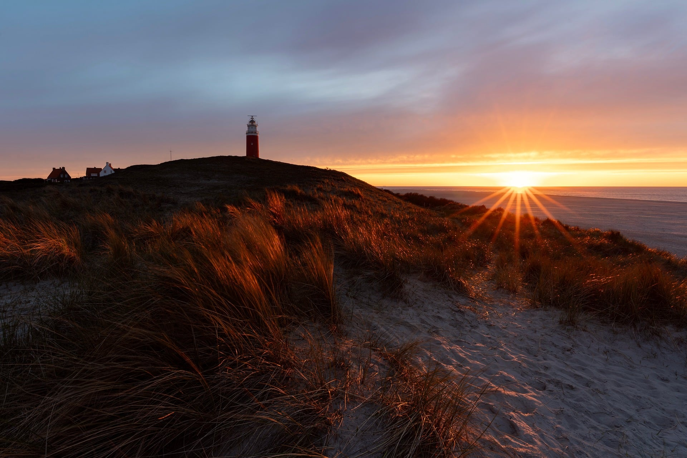
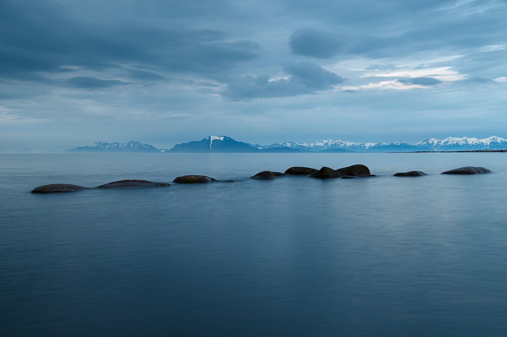

Informações
Lisboa é a capital de Portugal e uma das cidades mais antigas da Europa. Na tabela abaixo encontra os principais dados sobre a sua população, área e localização, seguidos de algumas curiosidades sobre a sua história, os seus monumentos e os símbolos que fazem parte da identidade da cidade.

| Demografia | População | 506.892 hab |
|---|---|---|
| Densidade populacional | 5066 hab/km2 | |
| Geografia | Área | 100km2 |
| Região | Lisboa | |
| País | Portugal | |
| Website | www.cm-lisboa.pt | |

- Lisboa é uma das capitais mais antigas da Europa, sendo anterior à fundação de Portugal.
- O elétrico 28 percorre vários bairros históricos, incluindo Alfama e Graça.
- O terramoto de 1755 destruiu grande parte de Lisboa. A reconstrução foi planeada pelo Marquês de Pombal.
- Lisboa tem sete colinas, segundo a tradição.
- A Ponte 25 de Abril é frequentemente comparada à Golden Gate Bridge de São Francisco.

